HomeLink Farm 1.5.0
Module agricole de l'écosystème HomeLink : surveiller, diagnostiquer, irriguer, optimiser et connecter une exploitation. Aucune ressource n'est jamais créée ; seul le FarmBot récolte et replante, en se déplaçant réellement jusqu'aux cultures.
Blocs et objets#
| Élément | Rôle |
|---|---|
| Farm Controller | Cerveau de l'exploitation : composants reliés, statistiques agrégées, appareil HomeCore. |
| Crop Monitor | Surveille une zone : cultures prêtes/en croissance, maturité, irrigation, problèmes. |
| Farm Connector | Outil de configuration (non consommé) pour relier les blocs entre eux. |
| Irrigation Pump | Cœur hydraulique : nécessite une vraie source d'eau adjacente ou immergée. |
| Copper Irrigation Pipe | Tuyau connecté automatiquement, s'oxyde esthétiquement en ~100 jours de jeu ; les quatre stades se cirent à la cire d'abeille pour figer leur aspect, comme le cuivre vanilla. |
| Copper Sprinkler | Irrigue la zone autour de lui, éclaire comme une torche. |
| FarmBot Station | Dock, chargeur, point de départ/retour d'un FarmBot. |
| FarmBot | Robot agricole autonome : récolte et replante les cultures mûres. |
Recettes#
Toutes en table de fabrication vanilla. Icônes : rendu 3D des blocs, comme dans l’inventaire ; les objets (lingots, composants…) gardent leur texture réelle.
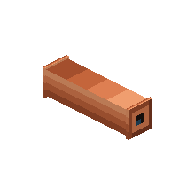
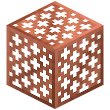
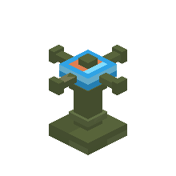
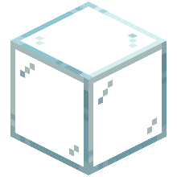
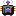
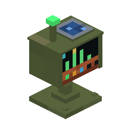
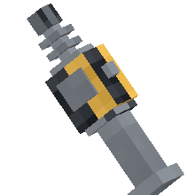
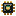
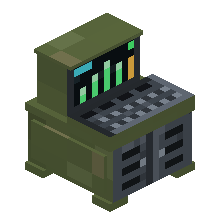
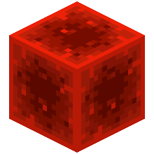
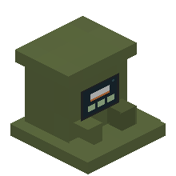
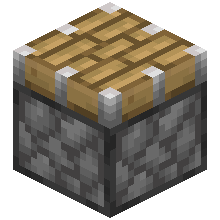
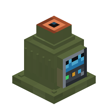
Surveillance et diagnostic#
Maturité normalisée 0→100 %. Problèmes signalés uniquement quand Minecraft fournit un signal fiable : DRY_FARMLAND, LOW_LIGHT, NOT_IRRIGATED, IRRIGATION_OFFLINE. La fonction LOCATE envoie un marqueur temporaire au joueur concerné, sans modifier de bloc.
Irrigation#
Règle déterministe : une pompe alimente au maximum 5 arroseurs. Au-delà, tout le réseau passe OVER_CAPACITY et s'arrête entièrement. Chaque arroseur couvre un carré 5×5 et apporte un bonus de croissance de +20 % aux cultures compatibles qu'il couvre.
FarmBot#
Le robot ne scanne jamais la ferme lui-même : le Crop Monitor lui fournit les positions mûres (512 au plus). Il s'y rend par pathfinding, récolte, replante avec une partie de la récolte, puis retourne à sa station à 20 % de batterie ou quand ses 9 emplacements sont pleins.
États visibles : DOCKED, IDLE, SEARCHING, MOVING, HARVESTING, RETURNING, UNLOADING, CHARGING, PAUSED, STORAGE FULL, OUTPUT BLOCKED, LOW BATTERY, OUT OF POWER, STUCK, ERROR.
Vue irrigation (touche I)#
Repères visuels au-dessus des cultures : turquoise (zone irriguée), corail (réseau en panne), gris (arroseur non alimenté), croix dorées (cultures non irriguées).
Intégration HomeCore#
| Appareil | Métriques clés | Événements |
|---|---|---|
farm_controller | crop_count, maturity, irrigation_coverage, growth_bonus | crop_ready, problem_detected |
farmbot_station | farmbot_status, farmbot_battery, farmbot_storage | farmbot_low_battery, farmbot_storage_full, farmbot_stuck |
irrigation_pump | pump_status, sprinklers_connected, over_capacity | pump_over_capacity, irrigation_failure |
Ne dépend ni de Dashboard, ni de Storage, ni de la carte holographique : ces mods lisent les données génériques via HomeCore. Mod entièrement disponible en français et en anglais.
Installer#
Installer homelink_farm-1.5.0.jar, homelink_energy-0.5.0.jar et homecore-1.14.0.jar dans mods, client et serveur.
Galerie#
Captures en jeu. Cliquer pour agrandir.